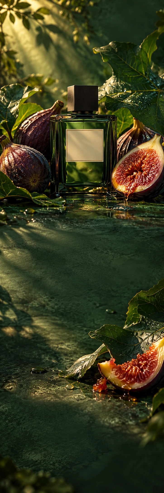

FIGUE ATELIER
ParfumGeurverhaal
THE FIG STUDY
Wild at
heart.
Ontdek Figue Atelier FIGUE ATELIER / VAN DICHTBIJ
Groen van buiten.
Onverwacht van binnen.
De geur van een gekneusd vijgenblad, het volle van rijp fruit en de warmte van hout. Een kleine ontsnapping die nergens netjes binnen de lijnen blijft.
01Vijgenblad
02Rijpe vijg
03Ceder
Blijf
nieuwsgierig.
Alsof je verdwaalt in de juiste tuin.
Ontdek Figue Atelier